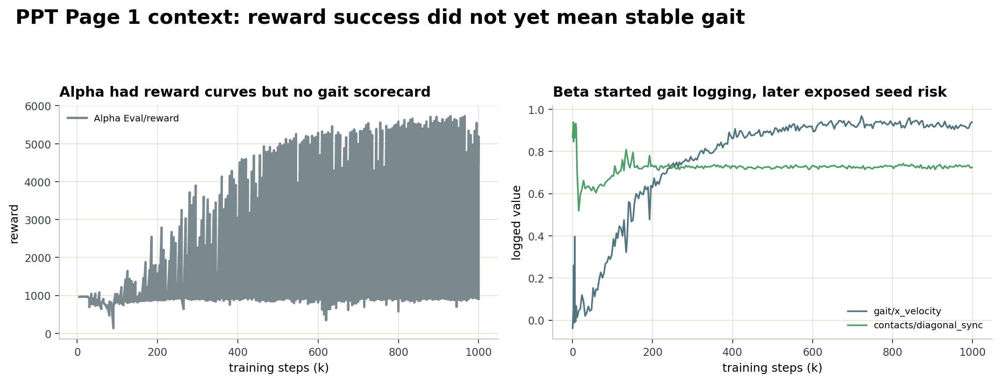
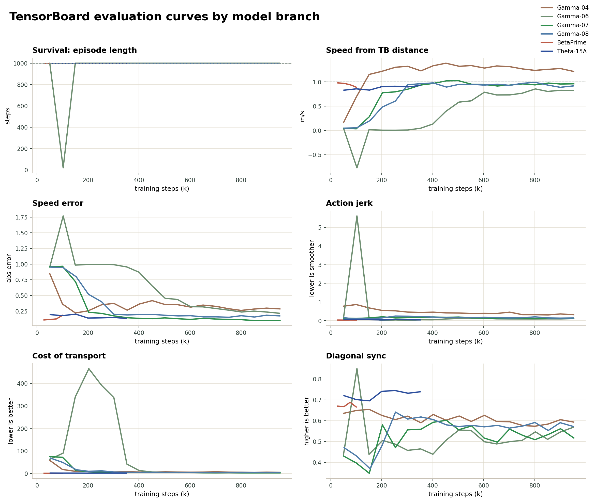
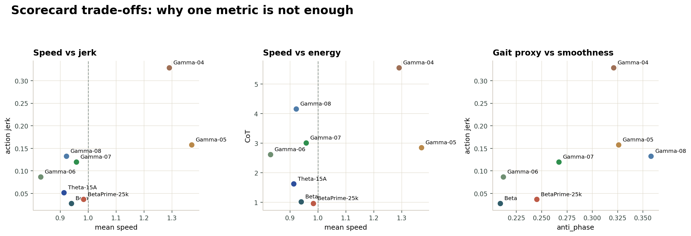
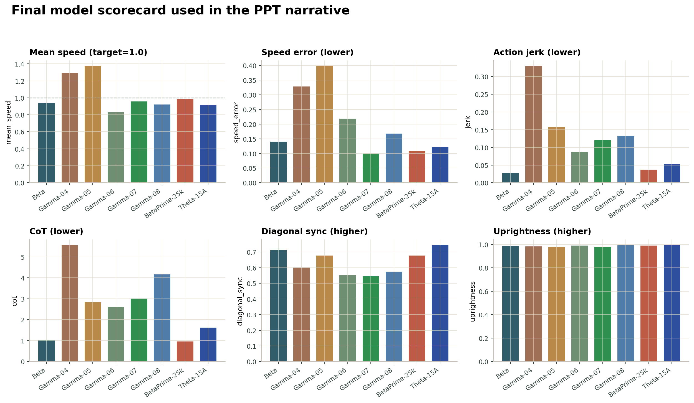

TD3 · Stable Baselines3 · MuJoCo Ant-v5
本頁收錄 簡報未呈現 的逐版 reward 設定、九大量化指標、完整比較表與多 seed 驗證；所有數據依實驗編號（03–15）對照記錄。
版本總覽
希臘字母為簡報代號，括號內為實驗編號（影片、程式碼、下方數據表皆以編號命名，可交叉對照）。全部模型訓練步數為 1M。
起點
自寫 TD3、未建指標；站著有收入、暴衝、出界、動作太抖。
自然步態基準
改用 SB3 TD3 + 步態 wrapper，可計算九種指標，看起來最自然——但 seed 不穩。
兩條改良分支
載入成功的 BETA 再做 gait gate 微調；12@25k 為目前指標最佳成品。
換 reward 做參數搜尋，訓練更穩、指標漂亮，但觀感較機械。
穩定化最終分支
不換最終 reward，只用 ctrl 排程修早期 fast-fall；可重現、指標漂亮、觀感自然。
量化方法
把「自然、穩定、省力」拆成可量化、可比較的數字，作為下方所有數據表的欄位定義。
| 類別 | 指標 | 中文名稱 | 解釋 | 理想方向 |
|---|---|---|---|---|
| 走路穩定 | episode_length | 存活步數 | 一回合能撐多久，有沒有中途摔倒。 | 越高越好（滿回合 = 1000） |
| mean_speed | 平均速度 | Ant 是否真的往前走，速度是否接近目標。 | 接近 1.0 m/s | |
| speed_error | 速度誤差 | 實際速度和目標速度的差距。 | 越低越好 | |
| 步態品質 | contact_regularity | 接觸週期性 | 對四隻腳的接觸序列做自相關，取主要週期峰值平均。 | 越高越好 |
| anti_phase | 對角交替度 | 兩組對角腳是否輪流踩地（trot）。diag1 = mean(FL, BR)、diag2 = mean(FR, BL)，再算 abs(diag1 − diag2)。 | 越高越好 | |
| diagonal_sync | 對角同步度 | 同組對角腳是否一致：0.5 × ((1 − |FL − BR|) + (1 − |FR − BL|))。 | 越高越好（搭配 anti_phase 看） | |
| 其他 | action_jerk | 動作抖動量 | 相鄰兩步 action 差值的平方和平均：mean(sum((aₜ − aₜ₋₁)²))。 | 越低越好 |
| transport_cost / CoT | 單位距離能耗 | 全 episode 控制力平方和除以前進距離：sum(action²) / distance。 | 越低越好 | |
| uprightness | 軀幹直立度 | 從 torso quaternion 算身體 z 軸朝上程度：1 − 2(qx² + qy²)。 | 越接近 1 越好 |
最終成果
簡報定案的三個模型對照；每欄最佳值以綠色標示。
| 模型 | 定位 | ep_len | mean_speed | speed_error | jerk ↓ | CoT ↓ | diag_sync | upright |
|---|---|---|---|---|---|---|---|---|
| BETA 03 | 自然步態基準 | 1000 | 0.940 | 0.140 | 0.028 | 1.02 | 0.712 | 0.986 |
| BETA′@25k 12 | 最佳指標 checkpoint | 1000 | 0.983 | 0.108 | 0.037 | 0.960 | 0.678 | 0.990 |
| THETA 15A | 穩定化最終模型 | 1000 | 0.913 | 0.122 | 0.052 | 1.62 | 0.744 | 0.991 |
THETA 成功修掉 fast-fall，能穩定走滿 1000 steps，速度接近目標且保持低抖動與高直立度；BETA′ / 12@25k 則是九大指標最漂亮的 checkpoint；BETA 是自然步態的視覺基準，但從零訓練 seed 成功率僅約 1/3。
完整數據
所有跑出同規格結果的版本並列；「—」代表現有紀錄無該數字。09、11、13、14、15 非同規格完整成品，列於下方詳解而不硬塞此表。各欄最佳值以綠色標示。
| 代號 | 版本 | Speed | Speed err ↓ | Regularity | Anti-phase | Diag sync | Jerk ↓ | CoT ↓ | Upright |
|---|---|---|---|---|---|---|---|---|---|
| β | 03 seed 0 | 0.940 | 0.140 | 0.239 | 0.209 | 0.712 | 0.028 | 1.02 | 0.986 |
| γ | 04 | 1.290 | 0.328 | 0.334 | 0.321 | 0.601 | 0.329 | 5.56 | 0.982 |
| γ | 05 | 1.370 | 0.397 | 0.355 | 0.326 | 0.677 | 0.158 | 2.85 | 0.977 |
| γ | 06 | 0.830 | 0.219 | 0.344 | 0.212 | 0.552 | 0.087 | 2.62 | 0.989 |
| γ | 07 seed 0 | 0.958 | 0.100 | 0.308 | 0.267 | 0.544 | 0.120 | 3.01 | 0.979 |
| γ | 08 | 0.922 | 0.168 | 0.380 | 0.358 | 0.575 | 0.133 | 4.16 | 0.993 |
| — | 10 | 0.886 | 0.160 | 0.128 | 0.175 | 0.606 | 0.216 | 4.91 | 0.985 |
| β′ | 12 final | 0.880 | 0.181 | — | — | 0.689 | 0.042 | 1.09 | 0.985 |
| β′ | 12 @ 25k | 0.983 | ~0.108 | — | 0.245 | 0.678 | 0.037 | 0.960 | 0.990 |
Speed 理想值為接近 1.0 m/s（非越大越好）；Speed err / Jerk / CoT 越低越好；Regularity / Anti-phase / Diag sync / Upright 越高越好。
建立指標後發現，Ant 不是「某一項變好就整體變好」；各項指標之間會互相拉扯。
TensorBoard 分析
直接讀 TensorBoard event 檔（RL_Labcowork/output/**/tb）整理出的圖表，把「reward 會騙人 → 指標互相 trade-off → 用 scorecard 共同檢查」這條主線用數據呈現。點圖可放大。

困境一 · Reward 高 ≠ 步態可信
左圖：Alpha 自寫 TD3 的 Eval/reward 一路上升，能確認模型有在學——但回答不了「是否自然、穩定、省力地走」。
右圖：Beta 改用 SB3 + RealisticGaitWrapper 後開始記錄 gait/x_velocity、contacts/diagonal_sync，主觀也最自然；但 multi-seed 才暴露 seed 1/2 會 fast-fall。

困境二 · 指標不會同時最佳
六張子圖（存活步數、速度、速度誤差、jerk、CoT、對角同步）對照 Gamma 04 / 06 / 07 / 08、BetaPrime 與 Theta-15A。
存活步數幾乎都能很快穩到 1000，但速度、jerk、CoT、diagonal_sync 不會同時收斂到最佳——這正是要建立九大指標的原因。
註：Gamma-05 本機無 event 檔，曲線不含 05。

為什麼單一指標不夠
三張散布圖：速度 vs jerk、速度 vs 能耗（CoT）、步態代理（anti_phase）vs 平滑（jerk）。
Beta、BetaPrime-25k、Theta-15A 聚在低 jerk／低 CoT 的甜蜜區；Gamma 系列即使某些單項突出，仍被拉到高能耗或高抖動。

解決 · 用 scorecard 共同檢查
六項指標長條圖（速度、速度誤差、jerk、CoT、對角同步、直立度）並排所有版本；最終不靠單一 reward，而是九項一起看：
逐版數據
展開每一版可看到「相對前一版改了什麼 reward」「跑出的指標」與「解讀」。這是 PPT 放不下、但決定每個數字背後原因的細節。
β · 自然步態基準
為什麼自然：ctrl=5 很重，模型不能大力甩腳，只能找省力走法。問題：站著速度 0 會被 deviation 扣 −1；早期隨機動作 × ctrl=5 產生巨大負 reward，模型容易學成「快速摔倒止損」。13 證明從零訓練成功率僅 1/3。
γ · progress reward 搜尋（04–09）
穩定會走，但超速、很抖、很費力——只適合當「穩定結構」的起點。
協調比 04 好、抖動減少，但還是超速，主觀仍不像 03 自然。
最平滑的版本，但速度偏慢，步態被磨得比較柔弱。
速度控制 progress 系列最好，但 jerk 約為 03 的 4.3 倍、CoT 約 3 倍——會走、速度準，但較像機器踩節拍。14 即用來驗證它跨 seed 是否穩定。
regularity、anti-phase、uprightness 最好，但踏步更用力。證明「週期性與 gait 指標漂亮 ≠ 主觀像真實動物」。
沒跑完，因此不列數據、也不用來下結論。
對照與失敗實驗（10、11）
比預期差。03 的自然度來自整套 reward 結構 + 重 ctrl + 訓練過程，不是單一 gait 公式。
03 的站立 gait 分不只是漏洞，也在 early training 提供「先站穩」的學習鷹架；第一步就拿掉會讓 cold start 更難。
β′ · 載入成功 03 再微調（12）
微調愈久策略往較慢速度漂移，故選 25k 早停。12@25k 保留 03 自然感又拿掉站著時的 gait 分，是目前最好的模型檔——但底座仍是那次幸運成功的 03 seed 0。
θ · 穩定化最終分支（15 / 15A）
早期低 ctrl 先學站穩、移動，會走後再把 ctrl 加回 5，最終回到 03 的省力目標。修掉 fast-fall、走滿整場、diagonal_sync 甚至高於 BETA；目前限制是仍需更多 seed（特別是 seed 2）驗證。
穩健性驗證
13 不是新模型，而是把「03 → 12」整條流程用 seed 0 / 1 / 2 各跑一次，檢驗是否可重現。結論：03 從零訓練成功率僅 1/3。
| Seed | Stage 1：03（β）從零訓練 1M | Stage 2：載入 03 後 gate 微調（β′） |
|---|---|---|
| 0 | 成功，會走滿 1000 steps | 成功，12@25k 成為冠軍 |
| 1 | 失敗，平均約 14.7 steps 就摔 | 底座已失敗，微調也失敗 |
| 2 | 失敗，平均約 16.2 steps 就摔 | 底座已失敗，微調也失敗 |
03 從零訓練成功率只有 1/3；12 的 gate 微調能改善「成功的 03」，但救不了本來就只會摔倒的底座。12@25k 是最佳成品，但「03 → 12」不是可靠的完整配方——這也是 THETA（15）想用 ctrl 排程解決的問題。
影片證據
數字之外的步態實況。檔名依實驗編號，可對照上方數據。
β′ · exp 12 @ 25k
成功的 03 經 gait gate 微調 25k；速度最準、能耗最低。
θ · exp 15A
ctrl curriculum 從零訓練修掉 fast-fall，再補速度。
※ BETA（03）為自然步態視覺基準，本機未保留同規格錄影，故以其微調後代 BETA′ 影片代表該系列。下方對照可見同一場 12 微調至 ~100k 後速度漸漸漂慢，這正是選擇 25k 早停的原因。
附錄 · 程式碼
完整 TD3 × Ant-v5 期末專題程式碼，已整理成可在瀏覽器內閱讀的程式碼專區：含每個模型的訓練腳本、共用工具、reward 設計規格與兩份網頁版報告，全部直接在頁面內檢視，不需下載原始檔。
線上瀏覽：側欄檔案樹 ＋ 內嵌檢視器（Python 語法 highlight、Markdown 即時渲染）；或從雲端硬碟下載完整程式碼包。
| 資料夾 | 意義 | 主要內容 |
|---|---|---|
| alpha/ | Alpha 模型 | 自寫 PyTorch TD3，reward shaping 起點 |
| beta/ | Beta 模型 | SB3 TD3 + RealisticGaitWrapper，第一個自然步態版本 |
| gamma/ | Gamma reward 搜尋 | 04–08 reward 參數搜尋，處理站著、超速、抖動與步態 trade-off |
| beta_prime/ | Beta Prime 模型 | 從 Beta checkpoint 做 gait gate curriculum 微調 |
| theta/ | Theta 最終線 | 用 ctrl curriculum 修 fast-fall，15A 為目前 Theta final |
| validation/ | 驗證腳本 | multi-seed 與 scorecard 評估 |
| tools/ | 共用工具 | TD3 agent、gait wrapper、scorecard metrics、訓練骨架 |
| specs/ | 設計筆記 | 重要 reward 設計與實驗規格 |